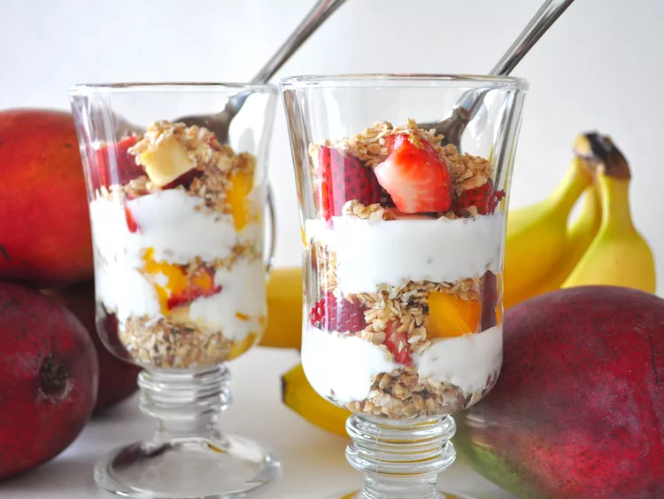

Yogurt Parfait

Description
This yogurt parfait recipe makes a delicious breakfast, snack, or dessert! It looks great in a glass, but can also be made in a bowl. Use your favorite fruit, or whatever is in season.
Ingredients
- 2 cups vanilla yogurt
- 1 cup granola
- 8 blackberries
Steps
- Layer 1 cup yogurt, 1/2 cup granola, and 4 blackberries in a large glass; repeat layers.